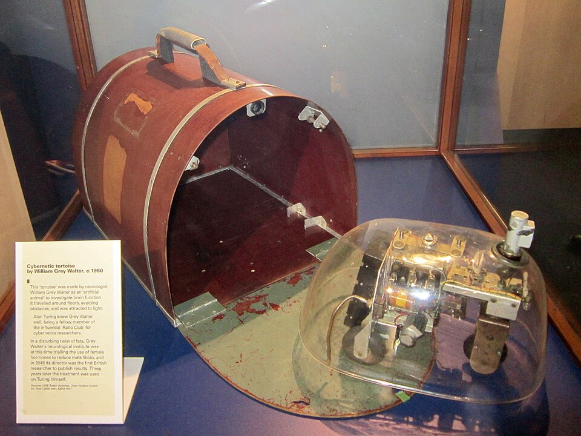

freeCodeCamp · Responsive Web Design · проект 2
Грей Уолтер
Нейрофизиолог, который в 1948 году выпустил в комнату двух черепах — и они сами нашли дорогу домой.

Уильям Грей Уолтер родился 19 февраля 1910 года в Канзас-Сити, а вырос в Англии. Он был нейрофизиологом — то есть человеком, который изучал мозг, — и почти всю жизнь проработал в Неврологическом институте Бёрдена в Бристоле. Но известен он стал не статьями об электрических волнах мозга, а двумя жестяными черепахами.
Сначала — мозг
В 1930-х Уолтер собирал собственные электроэнцефалографы и делал с ними то, что до него не делал никто: научился по слабым электрическим колебаниям находить, где именно в мозге рождается альфа-ритм, и отличать здоровый ритм от больного. Он первым построил машину, рисующую карту активности мозга. Во время войны занимался радаром. А в 1964 году обнаружил явление, которое до сих пор неудобно обсуждать: за полсекунды до того, как человек осознаёт своё решение двинуться, в его мозге уже появляется электрический всплеск. Мозг начинает раньше, чем человек решает.
Потом — черепахи
В 1948–1949 годах он построил Machina speculatrix — двух трёхколёсных роботов, которых звал Элмер и Элси. Внутри было очень мало: один фотоэлемент, один контакт-усик на случай столкновения, два мотора и одна лампа. Никакого компьютера, никакой программы в современном смысле — только аналоговая схема, собранная так, чтобы связи между её частями были хитрее, чем сами части.
И этого хватило. Черепахи ползли на свет, но не на любой: слишком яркий свет их отпугивал, умеренный — притягивал. Они обходили препятствия, а когда садилась батарея, меняли поведение и начинали искать свой «домик» — зарядную станцию. Со стороны это выглядело как голод и насыщение. Уолтер настаивал: это не метафора, это и есть то же самое, только из реле вместо клеток.
Однажды он прикрепил черепахе лампу на «нос» и поставил перед ней зеркало. Робот увидел собственный свет, дёрнулся к нему, снова увидел — и заметался. «Оно начало мигать, — написал Уолтер, — щебетать и подпрыгивать, как неуклюжий Нарцисс». И добавил осторожно: если бы такое делало животное, мы бы сочли это признаком некоторой самоосознанности.
Другую черепаху он научил условным рефлексам — по схеме Павлова: свисток означает еду, удар означает еду, а потом свисток начинает означать удар. Она стала бояться еды. Уолтер отключил лишние цепи, и черепаха снова стала просто черепахой.
Почему это важно
В те же годы Тьюринг и фон Нейман объясняли мышление через вычисление — цифры, шаги, инструкции. Уолтер пошёл против течения: он делал мышление из непрерывного электричества и связей, а не из символов. И написал об этом статью с названием, которое мне особенно дорого: «A machine that learns», «Машина, которая учится», — в 1951 году.
Через двадцать лет его почти забыли. Потом о нём вспомнили: Родни Брукс, Ханс Моравец, Марк Тилден — все, кто строил роботов «от поведения», а не от плана, называют черепах своими предками. Оригинальная черепаха стоит в лондонском Музее науки.
Одна честная сноска
В историях про Уолтера почти всегда фигурирует он один. Но в его лаборатории работала Вивиан Дави, рентгенолог и его жена, — и она была не «женой при учёном», а соавтором: часть схем и экспериментов с черепахами её. В статьях и музейных подписях её долго писали как помощницу. Это стоит помнить не ради справедливости к прошлому, а потому что так работает и сейчас: рядом почти всегда кто-то есть, и его легко не заметить, если не спросить.
«Богатство поведения зависит не от числа элементов, а от числа связей между ними».
— мысль, ради которой Грей Уолтер и построил черепах
Подробнее о нём и о черепахах — статья в Википедии и архив работ Грея Уолтера.